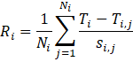
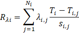
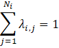

Using the Delaunay triangulation
to detect anomalies in unstructured data
In some cases, a data set collected for a natural phenomenon may contain anomalous samples. We view data points as anomalies when their values are not consistent with those of other samples taken in their vicinity. Anomalies may arise due to measurement error, incorrect data recording, or equipment failure… But they also may reflect the presence of an unexpected locally significant feature in the data source. We can detect anomalous samples based on whether their values would be plausible when compared with those of their neighbors.
Of course, to compare a test value to nearby data samples, we require a method of classifying points as neighbors. A simple distance criterion may be inadequate in cases where samples are not spaced in a regular pattern or with a uniform density. For data samples collected over a surface, the 2D Delaunay triangulation provides a robust and effective method for linking pairs of data points to form an optimal triangle-based network. It is particularly effective in cases where the input sample set consists of unstructured data (sample points that are not organized in a regular grid or geometric structure). Although the Delaunay optimization is focused on the structure of its triangles, the resulting selection of neighboring vertex pairs provides a good balance between proximity, directionality, and density. These qualities make it a favorable choice for techniques that detect and isolate anomalous data points based on neighboring samples.
To illustrate how a Delaunay-based technique works, let’s consider a real-world example: weather observations. Figure 1 below shows a Delaunay triangulation created from a set of surface temperature data reported by weather stations at airports and other facilities located worldwide. Vertices for the triangle-based network are taken at the coordinates of the reporting stations. The weather data used in the figure is distributed in a format called the Meteorological Aerodrome Report, or METAR. METAR reports are issued once an hour and are available via a number of international data services. Because METARs are intended for use in safety-of-aviation operations, the data is usually of high quality. The associated weather recording equipment is well maintained and regularly monitored. Even so, glitches can arise.
In March of 2019, an automatic weather observing station located on an oil platform in the Gulf of Mexico issued several weeks of METAR reports with temperatures in the range 51°C (124°F) and above.[1] Clearly, the reported temperatures were unreasonably high for almost any location on Earth. At that time, surface temperatures at neighboring locations were running at an average of about 22°C (72°F). The result of this anomalously high value shows up as a hot spot in the figure below.
METARs identify their reporting station using alphanumeric facility codes. These locations of these facilities are treated as vertices in the Delaunay triangulation shown above. The problematic temperature reports were issued from station KHHV which is located at the position located on the map.
In comparing a data value to other samples taken in its vicinity, we require some method of classifying pairs of samples as neighbors. As the figure above shows, the spacing of METAR reporting stations is not uniform and not readily organized into a regular structure. In this case, a simple distance approach (collecting all samples within a certain radius) would select many stations from the inland areas of the north and west (inland U.S. and Mexico), but would neglect those to the south and east. Ensuring that a group of neighbors sweeps over all directions requires a more sophisticated approach.
One key feature of the Delaunay is that the decision to treat a pair of stations as neighbors is based on more than just a simple distance specification. Instead, the Delaunay attempts to link vertices in such a way as to optimize the geometry of the resulting triangles. This approach is important in the case of KHHV because, as the figure shows, the stations in the Gulf area are not uniformly spaced. By allowing the sample for KHHV to be linked with those for stations across a variety of distances, the Delaunay ensures that there are associated neighbor points in all directions.
Figure 2 below shows a closer view of the neighboring stations associated with station KHHV using the Delaunay triangulation. Note that in order to ensure that there is at least one neighbor in the southeast direction, we must consider the Mexican station MMMD which is located on the Yucatan Peninsula. MMMD is over 800 kilometers from KHHV. The Delaunay provides fully directional coverage. Also note that the Delaunay structure allows us to treat stations such as KRAS, KPIL, and KBRO as blocking less relevant inland stations from being included in the selection. Thus the Delaunay provides good directional coverage while reducing the number of neighbors to a meaningful size.
The rules for deciding whether a sample is consistent with its neighbors vary based on the nature of the data under consideration. Weather is a complex phenomenon that depends on many factors. But for purposes of this example, we will keep it simple. We consider a reported data value to be anomalous if it presents too abrupt a change from those of its neighbors. So, our primary decision criterion is just whether the rate of change in temperature over the distance between neighbors is too extreme. We can formulate some idea of what is a reasonable rate of change by looking at the overall population of the data set. And, for our simplified anomaly classification scheme, we will test whether the rates of change for a station and its neighbors generally exceed that reasonable value.
Again, this classification scheme is based on simplified, empirical observations rather than solid meteorological theory. As such, it is adequate as an example, but may not be reliable in practice. With that in mind, our rules for identifying a station’s data value as anomalous can be summarized as follows:
To implement these rules, we define a formula for calculating a rate:
Where
Ri is the rate-of-change
based test value for the ith reporting station.
Ni is the number of neighboring
stations for the ith reporting station.
i,j indicates the jth neighbor of station i.
Ti is the temperature for station i,
given in °C.
Ti,j is the temperature for the jth
neighbor of station i, given in °C.
Si,j is the distance from
the ith reporting station to its jth neighbor, given in km.
This formulation leads to the question of how we determine a threshold value for classifying a value as conflicting. To answer that, let’s consider the data for KHHV and its neighbors.
The table below shows the recorded temperatures and the computed rate of change for the stations that neighbor KHHV. The distance from KHHV to its neighboring stations are given in kilometers. The average rate for station KHHV is about 0.1472 degrees Celsius per kilometer.
| Station | Ti,j °C | ΔTi,j °C | Si,j km | Ri,j °C/km |
|---|---|---|---|---|
| KVAF | 22 | 31 | 46.5 | 0.6670 |
| KRAS | 23 | 29 | 255.9 | 0.1133 |
| KPIL | 24 | 28 | 276.6 | 0.1012 |
| KBRO | 23 | 27 | 295.0 | 0.0915 |
| MMMA | 22 | 28 | 311.8 | 0.0898 |
| MMTM | 28 | 29 | 608.9 | 0.0476 |
| MMMD | 18 | 23 | 840.8 | 0.0274 |
| KATP | 18 | 33 | 462.2 | 0.0714 |
| KGHB | 20 | 33 | 284.7 | 0.1159 |
| Average | 0.1472 |
Comparing the average rate of change for a station with corresponding statistics from the general population might give a sense of whether its reported value is outside its expected range. Unfortunately, that approach doesn’t always work. It turns out that the test value for KHHV, 0.1472 °C/km, is not that unusual. Although it is in the top ten percent of the population, the test values for a number of other station reports also fall into that range. Many of the reported values for those stations appear to be valid. So we need a way of refining our test procedure.
Part of the shortcoming with the KHHV test score is due to the way we computed the average. A simple average gives equal consideration to all samples regardless of their distance from the station of interest. But the computed rates of change for distant stations will tend to have lower magnitudes than those that lie nearby. So distant stations like MMMD may reduce the overall average disproportionately. Also, a simple average for KHHV treats stations KPIL, KBRO, and MMMA as having equal significance. But those three stations are clustered close together and provide information for the same geographic area. Treating them as contributing equally to the overall average gives undue weight to phenomena in their proximity while deemphasizing others. A better representation of how the reported values for KHHV relate to its neighbors would require some consideration of both distance and the relative positioning of contributing stations.
Once again, we can use the Delaunay to refine our anomaly classification methods. It turns out that the structure of the Delaunay supports the calculation of Sibson weights, quantities that provide an optimal way for quantifying the relative contributions of a set of neighboring sample values to an overall average.[2] Sibson weights provide the foundation for the well-known Natural Neighbor Interpolation technique (Sibson, 1981). We can use the Sibson weights for the neighbors of each station in our data set to adjust the contributions of their computed temperature rates of change. With this adjustment, we gain a more nuanced test value for our reporting stations.
We obtain the contribution for each neighbor by multiplying its computed rate of change by the Sibson weight for that station. By definition, the sum of a set of Sibson weights is exactly one. So the sum of these contributed rates gives us a weighted average (no division required). The rate-of-change test value for a station becomes:
with the sum of the Sibson weights, λi,j for the neighbors of station i equal to 1.
The table below shows the results for KHHV. The closest station, KVAF, makes the most heavily weighted contribution to the adjusted rate. The contribution from the most distant station, MMMD, is relatively small. But the most interesting feature of the Sibson weights may be the way they affect the three stations in the cluster (KPIL, KBRO, and MMMA). Because the stations are so close together, they are treated as relatively redundant and their reduced contributions reflect that.
This weighted average, 0.5344 °C/km, becomes the test value for station KVVH.
| Station | T. °C | ΔT. °C | Distance km | Rate °C/km | Weight | Contribution |
|---|---|---|---|---|---|---|
| KVAF | 22 | 31 | 46.5 | 0.667 | 0.7719 | 0.5149 |
| KRAS | 23 | 29 | 255.9 | 0.1133 | 0.0020 | 0.0002 |
| KPIL | 24 | 28 | 276.6 | 0.1012 | 0.0254 | 0.0026 |
| KBRO | 23 | 27 | 295 | 0.0915 | 0.0752 | 0.0069 |
| MMMA | 22 | 28 | 311.8 | 0.0898 | 0.0018 | 0.0002 |
| MMTM | 28 | 29 | 608.9 | 0.0476 | 0.0300 | 0.0014 |
| MMMD | 18 | 23 | 840.8 | 0.0274 | 0.0243 | 0.0007 |
| KATP | 18 | 33 | 462.2 | 0.0714 | 0.0098 | 0.0007 |
| KGHB | 20 | 33 | 284.7 | 0.1159 | 0.0596 | 0.0069 |
| Test Value | 0.5344 |
So what is a good threshold for accepting a test value? Inspecting the Sibson-weighted test values for the overall population, we find that the test value for KVVH, 0.5344, exceeds the 99.8th percentile test value for all stations as shown in the table below.
| Percentile | Test Value | Percentile | Test Value | |
|---|---|---|---|---|
| 0.1 | -0.4271 | 99.1 | 0.1425 | |
| 0.2 | -0.3031 | 99.2 | 0.1494 | |
| 0.3 | -0.2590 | 99.3 | 0.1542 | |
| 0.4 | -0.2348 | 99.4 | 0.1618 | |
| 0.5 | -0.1886 | 99.5 | 0.1773 | |
| 0.6 | -0.1784 | 99.6 | 0.2262 | |
| 0.7 | -0.1614 | 99.7 | 0.2630 | |
| 0.8 | -0.1498 | 99.8 | 0.3170 | |
| 0.9 | -0.1405 | 99.9 | 0.4383 |
The data set from 16:00 UTC 27 March 2019 includes three samples that fall below the 0.1 percentile threshold value, -0.4271, and three that that exceed the 99.9th percentile test value, 0.4352. All of them also meet the selection criterion of being a local extrema. These are listed below.
| Station | T °C | Test Value | Location |
|---|---|---|---|
| KMWM | -11 | -0.4642 | Mount Washington, NH, USA |
| LIRK | -2 | -1.0194 | Terminillo Mount, Italy |
| LIMH | -10 | -0.4308 | Mt. Pian Rosa, Italy |
| KHHV | 51 | 0.5344 | Alaminos Canyon, Gulf of Mexico |
| KNKX | 29 | 1.9457 | Miramar NAS, CA, USA |
| KOWD | 6 | 0.4449 | Norwood, MA, US |
The station identifier KMWN refers to the Mount Washington Observatory located in New Hampshire, U.S. Unlike the case of KHHV, the reported temperature for KMWN is realistic. Mount Washington is notorious for extreme, and sometimes dangerous, weather. Station KMWN frequently reports much colder temperatures than those from nearby locations. In part, the difference in temperature reflects the elevation of the reporting weather stations. Mount Washington Observatory is located at an elevation of 1909 meters above mean sea level. The elevation of its nearest neighboring station, KHIE, is 327 meters. In deciding on whether a temperature report represents problematic value, there may be advantages in modifying our test rate calculation to reflect a drop in temperature due to a difference in elevation.
We can calculate a drop in temperature based on elevation using the moist adiabatic lapse rate (Wikipedia, 2026). The standard lapse rate calculation requires information about atmospheric pressure and dew point, but for example purposes it is sufficient to use a typical lapse rate of 5 °C/km to create a simplified lapse rate as a linear function of change in altitude.
Where
Γ is a typical moist adiabatic lapse rate, 5 °C/km,
Ei is the elevation for reporting
station i, in meters above mean sea level,
Ei,j is the elevation for the jth
neighbor of reporting station i, in meters above mean sea level.
The table below shows lapse-rate factors for the stations that neighbor the Mount Washington Observatory. By applying these lapse-rate factors and the appropriate Sibson weights, the absolute test value for Mount Washington goes from 0.4642 to 0.1922 °C/km.
| Station | Elevation m | Adjustment °C |
|---|---|---|
| KHIE | 327 | -6.1 |
| K1P1 | 154 | -5.2 |
| KIZG | 138 | -5.1 |
| KBML | 353 | -5.2 |
Naturally, we need to apply the sample procedure to all stations in our data set. And, in doing so, we do need to derive a new acceptance threshold for test scores. For the overall population of METAR reports in our sample, the 99.8th percentile lapse-rate adjusted test value is 0.4420 °C/km. Since Mount Washington’s adjusted test value is 0.1922 °C/km, it is no longer classified as an anomaly. The other stations remain.
In evaluating a set of data samples for anomalous behavior, the Delaunay triangulation served two purposes. It provided a consistent and meaningful way of finding a set of neighbors for a sample point, and it gave a way of quantifying the relative contributions of those neighbors to an analysis of that sample. Experience gained through working with the weather example suggests that the Delaunay has potential use in other applications that deal with phenomenon distributed over a surface.
1. Weather observations in the form of METAR reports were provided by the National Center for Atmospheric Research/Earth Observing Laboratory (NCAR/EOL) under the sponsorship of the National Science Foundation https://data.eol.ucar.edu/
2. For more information on the derivation of Sibson weights and their use in the Natural Neighbor Interpolation technique, see Lucas, 2021.
Lucas, G.W. (2021). An introduction to natural neighbor interpolation.
Accessed March 2021 from
https://gwlucastrig.github.io/TinfourDocs/NaturalNeighborIntro/index.html
Sibson, R. (1981), A brief description of natural neighbor interpolation.
In Interpolating multivariate data, John Wiley & Sons, New York, 1981, pp. 21-36.
Wikipedia (2026). Lapse rate. Accessed February 2026 from https://en.wikipedia.org/wiki/Lapse_rate